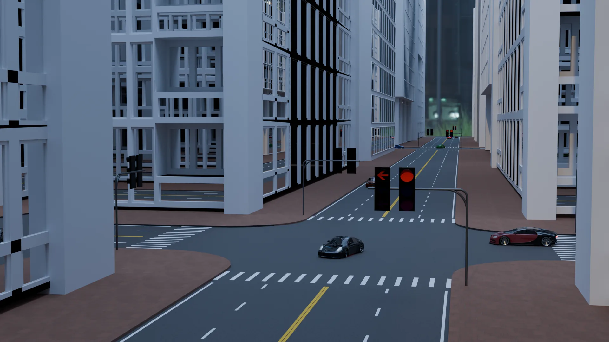
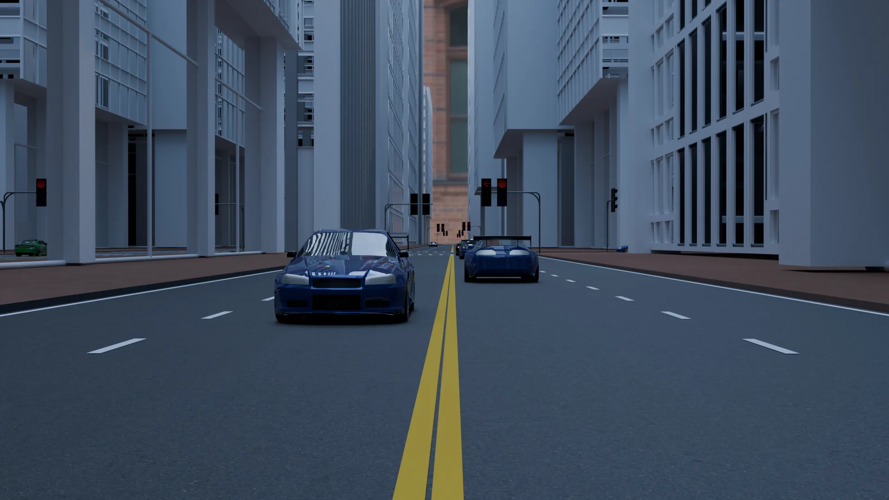
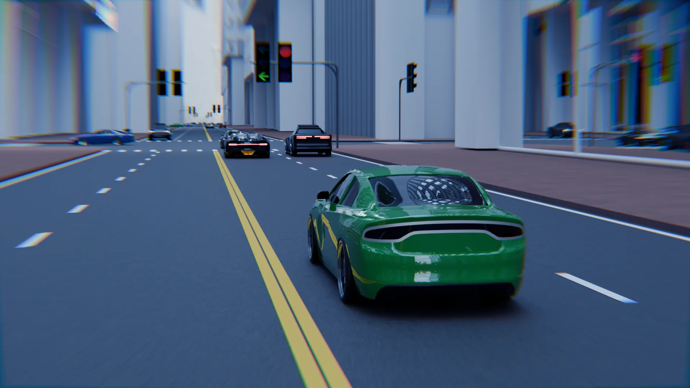
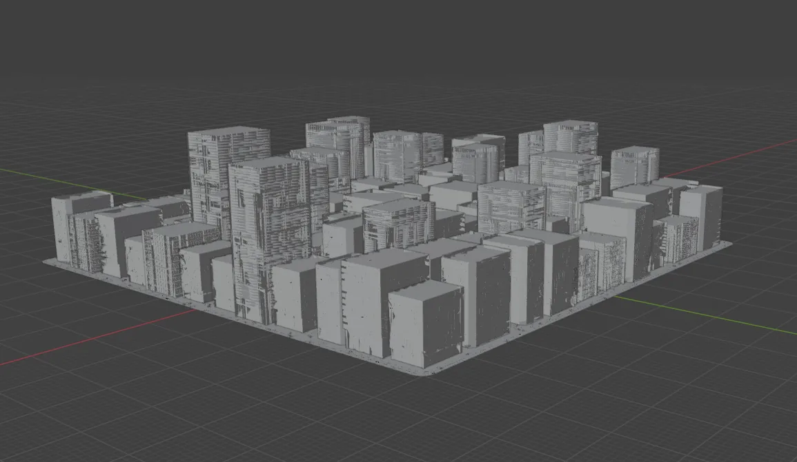

从几条线到完整路网 —— 路面、人行道、路口圆弧倒角、斑马线、红绿灯、车流， 一次生成。所有参数可改，生成的是可编辑的模型，不是一张贴图。
你不用一块块铺路面。你只需要告诉它路怎么走。
画一条线，就是一条路。路面自动带上宽度和坡度， 再自动接上人行道。改走向，路跟着变。
快速生成交叉口自动生成圆弧倒角，人行道正确衔接，地块一次切分。 不用再手动修那些对不齐的边角。
交叉口红绿灯四相位时序、车流路径、车辆转弯与停车、车轮转动 —— 路网建好， 交通系统也就位了。
交通下面这些街道、路口和车流，全部由插件生成 —— 没有手动摆放，也没有后期拼贴。




传统做法里，一条带交叉口的街道要花掉几个小时：铺路面、拉人行道、 修路口弧线、再把标线一条条摆上去。
RoadBuilder 把这件事变成「只管画线」—— 剩下的交给它。
从路面到交通，它们不是六个独立工具，是同一个系统里的六步。
沿着画好的路线生成路面，自动带宽度和坡度，人行道同步生成并衔接。支持自定义路面与人行道材质。
自动生成交叉口自动生成圆弧倒角，人行道在路口处正确断开与衔接。
自动处理道路围合出的地块自动切分，再从素材库里取模型铺进去 —— 轮换使用，不会每块都一样。
可换素材道路边线、双黄线、车道虚线、斑马线，位置相对斑马线自动计算，材质可逐个指定。
自动布局位置可指定，四相位信号时序（左转 → 直行 / 右转），周期由路口形态推出，每条相位含常亮与闪烁。
四相位车辆按信号相位行驶、转弯、停车，前轮跟着路径自然转向。车辆和路线跟着路网一起生成。
交通流我自己也做驾驶模拟和城市可视化的项目。每次场景里要加一条路， 都要重新铺路面、拉人行道、修路口弧线、把标线一条条摆上去 —— 明明是完全一样的活，却要重复几百遍。
RoadBuilder 就是从这件事里长出来的：把重复到让人厌烦的部分自动化， 只留下真正需要判断的部分。
生成出来的东西要能接着往下用，这才算工具。
建筑、车辆、路面材质都能换成你自己的。把模型放进去就能用， 也可以在单个项目里临时替换，不影响其他工程。
跟着 Blender 版本更新，修 bug、加新模块。现在是免费阶段， 有新版本会直接推送。
每个模块要准备什么素材、怎么放、有什么要求， 文档里都写清楚了。不用靠猜，出错也会有提示。
只要你的场景里有路，它就有用。
快速搭出街区尺度的路网，调道路宽度和路网密度，比手建快一个数量级。
路网 + 红绿灯 + 车流一起生成，场景里该有的交通元素一次就位。
需要大量街道但不需要每条都精雕细琢的时候，先用它铺底，有价值的街区再单独细化。
地块自动切分并铺建筑，配合自己的建筑素材，快速做出周边环境。
视频教程正在制作中，先把大纲放在这里。发布后会直接内嵌到这一区。
装好插件、点一次「开始使用」把素材库导进来，五分钟内准备好一个能用的工程。
约 5 分钟从一条边开始，生成路面和人行道，再调宽度、坡度和路口倒角半径。
约 10 分钟做出一个完整交叉口：斑马线、标线、红绿灯，最后加上会转弯的车流。
约 15 分钟没有任何功能限制，也不加水印。下载后直接生成完整路网。 用在你自己的项目里，有问题随时找我。